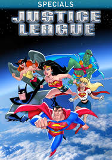

Home
TV shows & Movies
News
TV Shows
These are our top 5 animated TV shows made by WB, and they are linked to their own fandom Wiki's for more information.

Movies
These are our top 5 Movies made by WB, and they are linked to their own IMDB page for more information.